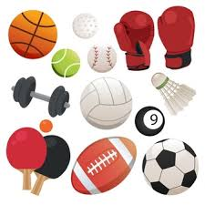

Qué es el deporte:
El deporte es una actividad reglamentada, normalmente de carácter competitivo y que puede mejorar la condición
física2 de quien lo practica, y además tiene propiedades que lo diferencian del juego.
La Real Academia Española, en su Diccionario de la lengua española, define deporte como una «actividad física,
ejercida como juego o competición, cuya práctica supone entrenamiento y sujeción a normas»; también, en una
segunda acepción, más amplia, como «recreación, pasatiempo, placer, diversión o ejercicio físico, por lo común
al aire libre».
Por otra parte, la Carta Europea del deporte lo define como: «Todas las formas de
actividades
físicas que mediante una participación organizada o no, tienen como objetivo la expresión o la mejora de la
condición física y psíquica, el desarrollo de las relaciones sociales o la obtención de resultados en
competición de todos los niveles»
Imagenen de Deporte

Institucionalmente, para que una actividad sea considerada deporte, debe estar avalada por estructuras
administrativas y de control que se encargan de reglamentarlo (las organizaciones deportivas).5 El hecho de que
alguna actividad no esté reconocida institucionalmente como deporte, no impide que pueda estarlo popularmente,
como ocurre con el deporte rural o con los deportes alternativos..
La mayoría de las definiciones de deporte lo definen como «actividad física», pero existen actividades de bajo o
nulo ejercicio físico que son consideradas como deportes por asociaciones como el COI, por ejemplo el
ajedrez, el tiro deportivo y los Deportes electrónicos, por pensarse que la concentración y habilidades
mentales necesarias para destacar en ellas requieren una buena forma física. Por el contrario, existen
actividades físicas extenuantes que no son un deporte, por no cumplir con otros elementos de la definición.
Así mismo, de acuerdo con el Comité Olímpico Internacional, la práctica del deporte es un derecho humano, y uno
de los principios fundamentales del Olimpismo es que «toda persona debe tener la posibilidad de practicar
deporte sin discriminación de ningún tipo y dentro del espíritu olímpico, que exige comprensión mutua,
solidaridad y espíritu de amistad y de juego limpio».

- Tecnología
Salud: La tecnología se encuentra presente desde la nutrición hasta el tratamiento de lesiones,
incrementando el potencial del deportista. Los atletas contemporáneos son capaces de practicar deporte a
mayores edades, recuperarse más rápidamente de lesiones y entrenar de forma más efectiva que en
generaciones anteriores. Un aspecto negativo de la tecnología aplicada al deporte consiste en el diseño
y consumo de sustancias dopantes, las cuales mejoran el rendimiento del deportista hasta muy altos
niveles, en ocasiones llegando a afectar seriamente a la salud del mismo, pudiendo ocasionar daños
irreversibles en el cuerpo o incluso la muerte. Por esta razón, en un gran número de deportes, dichas
sustancias están prohibidas por los distintos órganos reguladores del deporte a nivel profesional,
pudiendo significar su consumo la descalificación o la inhabilitación del infractor.".
Instrucción: Los avances de la tecnología han creado nuevas oportunidades en la investigación
deportiva.
Ahora es posible analizar aspectos del deporte que antes se encontraban fuera del alcance de nuestra
comprensión. Técnicas como la captura de movimientos o las simulaciones por ordenador han incrementado
el conocimiento acerca de las acciones de los atletas y el modo en que estas pueden mejorarse. Las
mejoras en tecnología también han servido para mejorar los sistemas de entrenamiento, en ocasiones
asistidas por máquinas diseñadas para tal efecto. Caso práctico se encuentra en el ciclismo..
Equipamiento: En ciertas categorías deportivas, el deportista se vale de diverso instrumental para
llevar
a cabo la actividad, así como los bates empleados en béisbol o los balones usados en fútbol o
baloncesto. Todos ellos han visto cómo sus características han ido variando con el paso de los años para
mejorar el rendimiento deportivo, alterándose factores como la dureza o el peso de los mismos. Asimismo,
en algunos deportes de contacto físico se hace necesario el uso de equipo protector por parte del
deportista, como por ejemplo en fútbol americano. Estas protecciones también han ido evolucionando con
el paso de los años y la propia evolución de la tecnología, dirigiéndose hacia elementos más cómodos y
seguros para la práctica deportiva.
Sugerencias a un correo electronico Correo
Lee sobre las actualizaciones de deportes aqui en este periodico Diario libre
Ir a la pagina principal DominicHope